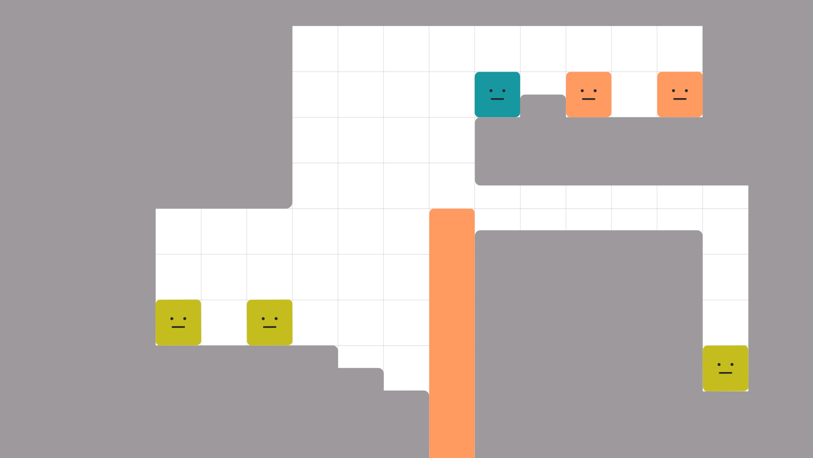
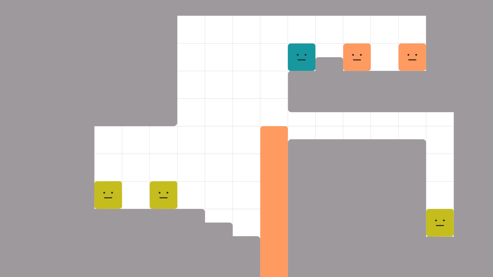

1.どんなパズル？
左下の 黄。 これを真ん中でどうにか持ち上げて、右の穴に運ぶパズルだね。
 は１コずつじゃないと、穴から落とせないよ。
は１コずつじゃないと、穴から落とせないよ。
close
左下の 黄。 これを真ん中でどうにか持ち上げて、右の穴に運ぶパズルだね。
 は１コずつじゃないと、穴から落とせないよ。
は１コずつじゃないと、穴から落とせないよ。
close
真ん中の 赤い串 は、上に何か乗るたび 0.5 ずつ下がる仕様。
いい感じの高さでストッパーをつけないと、どんどん下がっちゃうね。
ちょうどいい高さって、どこだろう？
通路と同じ高さだと、屋根に引っかかるのかー。
解答： 0.5 段下だと、通路にすっぽり入るよ。 この高さが理想！（下図参照）
close
さて、 をどう持ち上げようかな。
をどう持ち上げようかな。
赤で階段を作ってみる？
階段か！ 赤い串 の上側とくっつかないように、 を間にはさんで、と⋯⋯
を間にはさんで、と⋯⋯
わあ、0.5 段なら登れるみたいだね！
赤がもう１コ余ってるんだよね。 左側にもう１段、追加できないかな。
解答： できるよ！ 上段で階段を作ってから、落とせばOK（下図参照）。
close
もうちょっとで登れそう！ あと 0.5 段ほしいなー。 それに も邪魔だね。
も邪魔だね。
ほかにも登りテクはないかなあ。
ヒント１： あるよ！ 邪魔な 青 を使っちゃおう。地形もよく見て。
ヒント２： 階段の下にちょうど穴が空いている。 ここに 青 を入れてみよう。
解答： スタートからの手順。 １. 青を 赤い串 の上に落とす。 ２. 上段で 赤２つ を階段にして、青の上に落とす。 ３. 青を、上に乗った階段ごと左に落とす。 これで青を跳ねさせると、ジャンプによって 0.5 段、階段が持ち上がる！
あとは 黄 ２つを運ぶだけだ。 がんばれー！
close